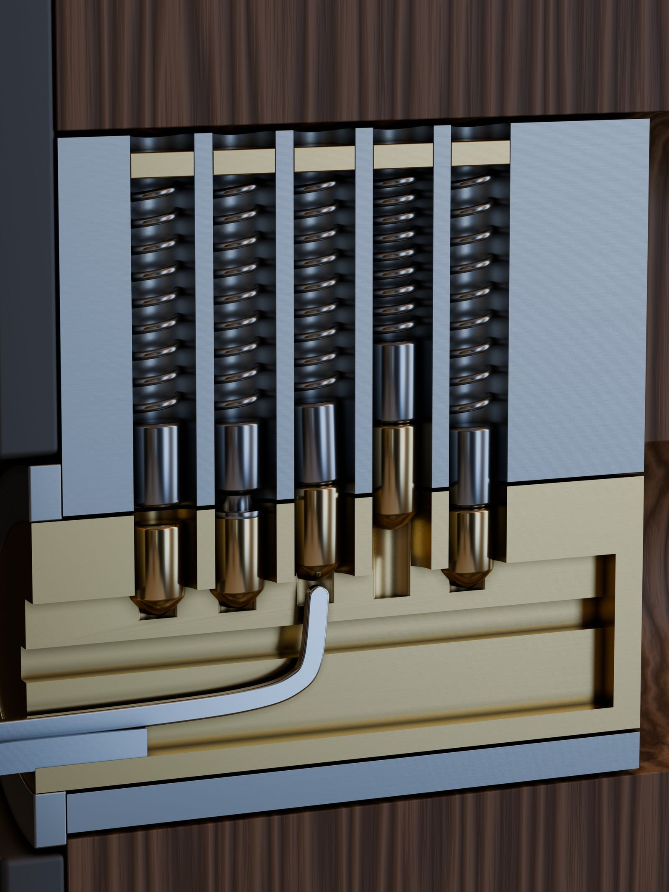
Lockwright: Pogotowie Zamkowe
Ciepła gra o ślusarzu z pogotowia: każdy wymyślony zamek otwierasz dwoma kciukami, czując i słysząc, co dzieje się w środku, a całą grę da się przejść bez patrzenia na ekran.
W przygotowaniu na iOS i Androida. Bez reklam, bez energii, bez kupowania monet.
O grze
Ktoś stoi pod własnymi drzwiami bez kluczy i dzwoni po ciebie. W Lockwright widzisz fotorealistyczny przekrój mechanizmu, ale najważniejsze dociera przez kciuki i uszy. Pin, który wiąże, stawia opór i skrobie. Pin, który siada, daje krótki, suchy klik. Szpulka udaje, że siadła. Między zleceniami kupujesz i naprawiasz narzędzia w warsztacie, a każde nowe narzędzie otwiera nowy rodzaj zamka. Tryb „w ciemności” gasi ekran: zostaje dotyk i dźwięk. Haptyka nigdy nie jest jedynym sygnałem, więc gra działa też bez niej. Wszystkie zamki są wymyślone i bez marki. To gra, nie kurs.
Zamek czujesz kciukami
Kciuk
Pin, który wiąże, stawia opór i skrobie. Pin, który siada, daje krótki, suchy klik w kciuku.
Ucho
Każdy stan ma swój dźwięk: mosiądz, stal, drewno. Haptyka nigdy nie jest jedynym sygnałem.
Oko
Fotorealistyczny przekrój pokazuje to samo, co czujesz: szczelinę, przechył, opór.
Tryb „w ciemności”
Ekran gaśnie, zostaje dotyk i dźwięk. Całą grę da się przejść bez patrzenia na ekran.
Wymyślone mechanizmy
Każdy zamek w grze jest wymyślony i bez marki. Proporcje są dobrane tak, żeby dało się je czytać.
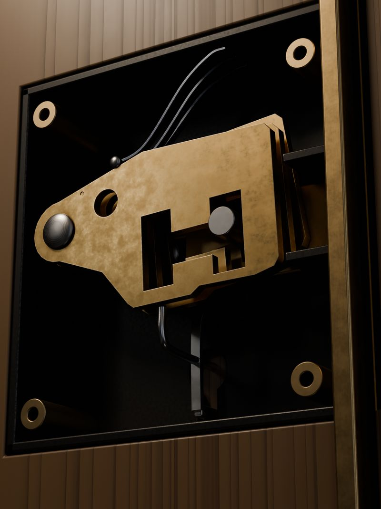
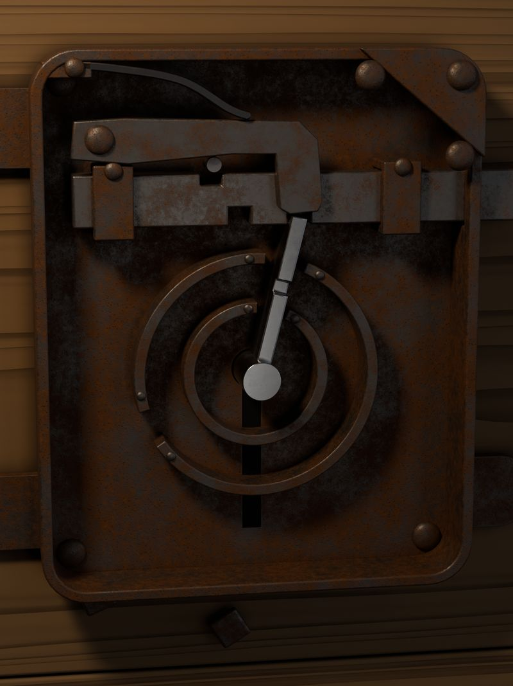
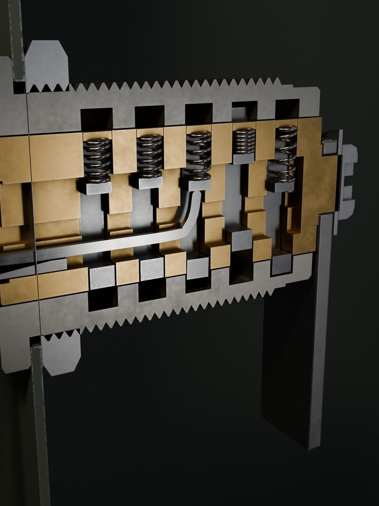
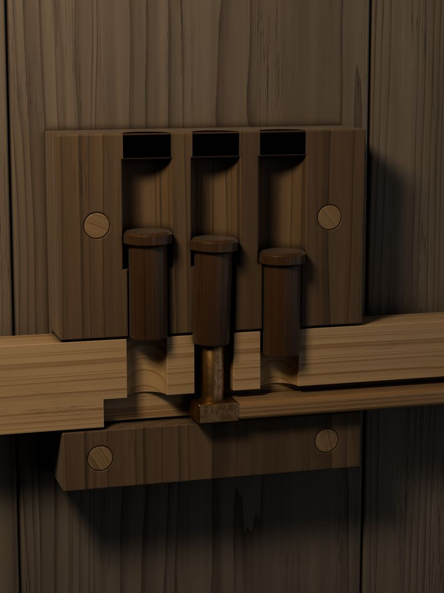
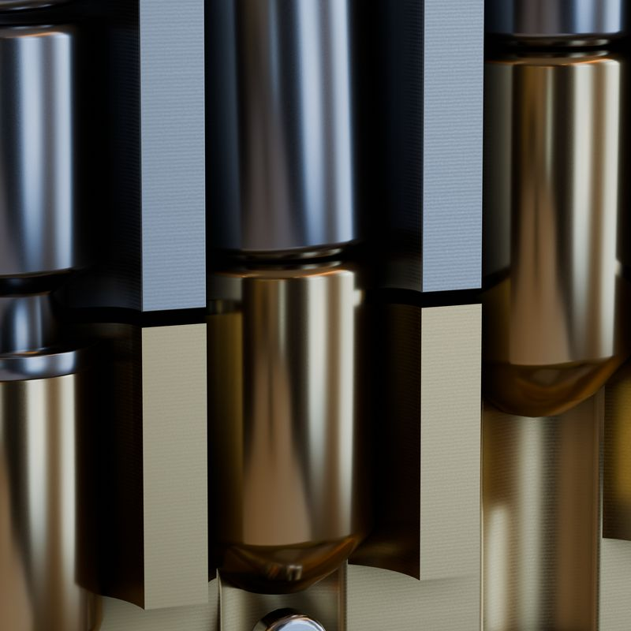
Makiety ekranów
Kierunek wizualny „realizm” (makiety, nie zrzuty z gotowej gry).
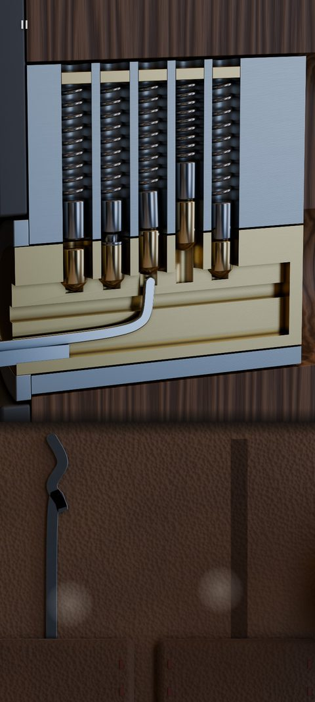
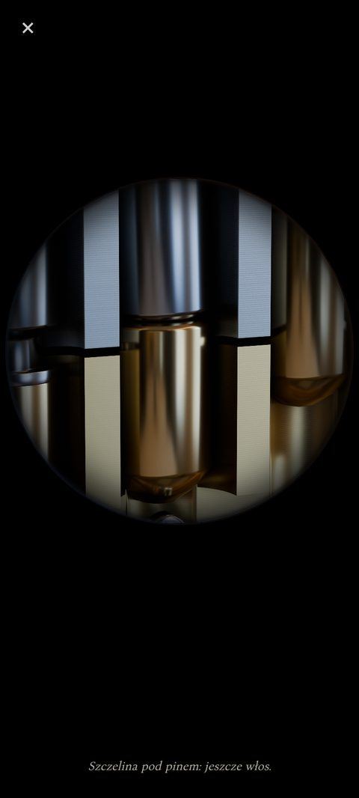
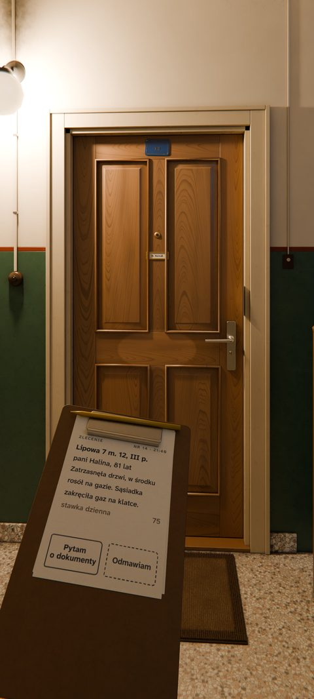
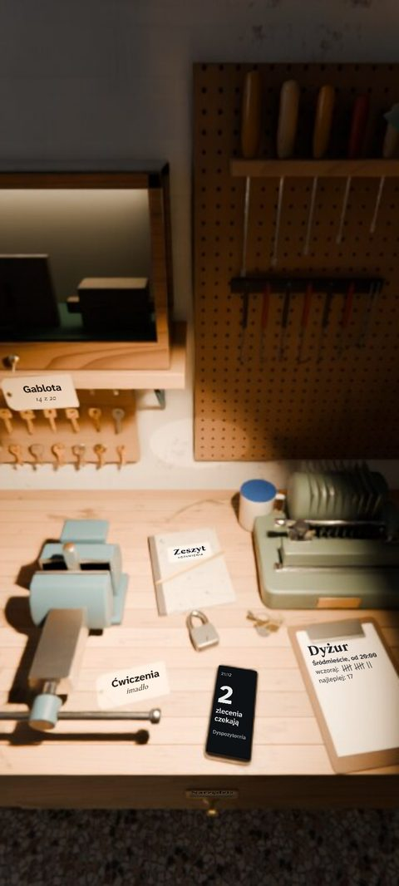
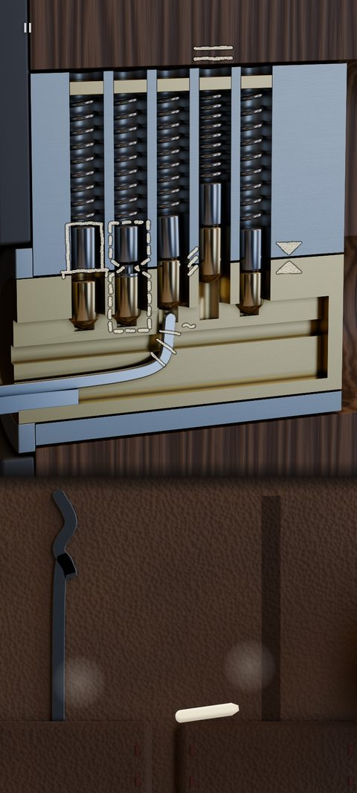